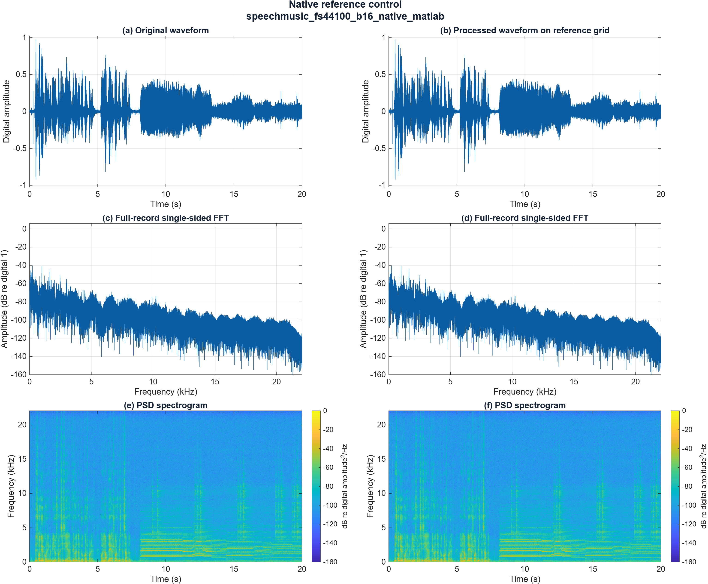
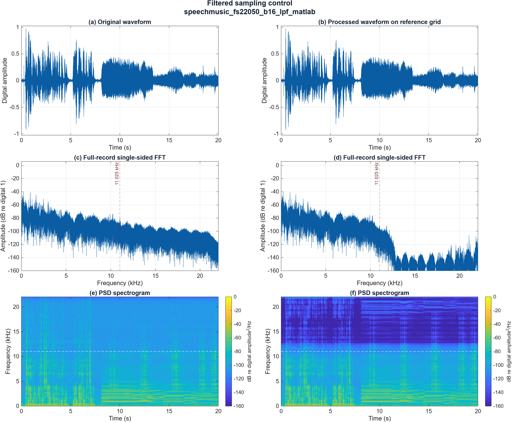
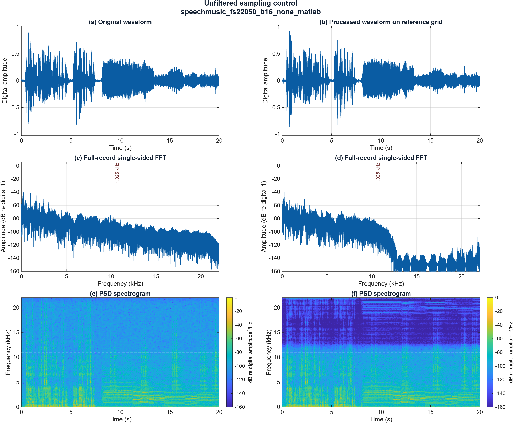

CCEN 302 - Jesher | Report section prepared 31 October 2026
Measured run: 30 October 2026, 17:02:11 Asia/Dubai. MATLAB R2026b Update 1. This section completes the presentation of the three currently available MATLAB controls; the full MATLAB/Simulink experiment remains incomplete.
Table 1. Evaluated mono signals and actual sample counts.
| Condition | Rate (Hz) | Samples | Duration N/Fs (s) |
|---|---|---|---|
| Native reference | 44,100 | 882,005 | 20.000113379 |
| Filtered (lpf) | 22,050 | 441,003 | 20.000136054 |
| Unfiltered (none) | 22,050 | 441,003 | 20.000136054 |
Input: Audios/SpeechMusic.wav, mono 44,100 Hz, 16-bit PCM. The lower-rate arrays are sampling-only double-precision outputs. Their b16 identifiers refer to source/control precision; no additional quantizer was applied.
Table 2. Total processing error before WAV conversion, on the aligned original grid.
| Condition | NMSE | SNR (dB) | Metric status |
|---|---|---|---|
| Native reference | 0 | +Inf | unchanged |
| Filtered (lpf) | 0.000807222473989 | 30.93006755 | finite |
| Unfiltered (none) | 0.00122019794119 | 29.13569712 | finite |
The filtered case has 1.7944 dB higher SNR and 33.84% lower NMSE than the unfiltered case for this recording and comparison policy. These are objective error comparisons, not a measured listening preference. The unchanged control has zero error and therefore +Inf SNR by definition.
Coverage: 3/36 MATLAB cases and 0/36 Simulink cases evaluated by this run. The remaining 69 entries are explicitly missing, rather than assigned estimated scores.
Let E_reference = sum(x[n]^2), and E_error = sum((x[n] - y_aligned[n])^2), where both arrays represent the same physical times. The implemented measures are:
NMSE = E_error / E_reference
SNR_dB = 10 log10(E_reference / E_error)
For positive reference and error energies, SNR_dB = -10 log10(NMSE). Unchanged nonzero input gives NMSE = 0 and SNR = +Inf. Zero reference and zero error give NaN/NaN; zero reference with positive error gives +Inf/-Inf. Explicit statuses distinguish these cases; no epsilon is inserted to manufacture a finite score.
AA03 alignment reconstructs each 22,050 Hz array using resample(y,2,1,10,5). This yields 882,006 samples; only the final unmatched endpoint is discarded. All 882,005 original samples are compared, from t = 0 to 20.000090702948 s. No extra edge trimming, lag search, fitted gain or independent normalization is used. Existing MATLAB FIR delay compensation is not repeated.
The filtered producer uses resample(x,1,2,10,5), a 41-tap FIR (order 40), Kaiser beta = 5, with its delay compensated. The unfiltered producer selects x(1:2:end) directly. Reference and processing arrays are retained in evaluation.mat and the producer handoff is copied into input_snapshot/.
Table 3. Matched figure settings applied to original and reconstructed signals.
| Analysis | Settings |
|---|---|
| Waveform | Full comparison interval; common amplitude limits within each figure. |
| FFT | Full-record N = 882,005; divide magnitude by N; double paired positive-frequency bins; no extra taper. |
| FFT scale | 20 log10(amplitude); reference digital amplitude 1; display floor -160 dB. |
| Spectrogram | Periodic Hann window: 1,024 samples; overlap: 768 (75%); hop: 256; DFT: 2,048; analysis rate: 44,100 Hz. |
| PSD scale | One-sided PSD; 10 log10(PSD), digital amplitude squared per Hz; color limits -160 to 0 dB. |
The spectrogram window spans approximately 23.22 ms and its hop is 5.805 ms; the DFT-bin spacing is 21.5332 Hz. Bin spacing is not a claim of independent frequency resolution. All displayed dB levels are digital measures, not calibrated sound-pressure levels.

Figure 1. Native reference control, speechmusic_fs44100_b16_native_matlab. Panels (a,c,e) show the original; (b,d,f) show the unchanged control. Rows show waveform, single-sided FFT magnitude and PSD spectrogram. Both columns use the 44,100 Hz grid and the matched settings in Table 3. No rate conversion or additional quantization is applied.
Waveform. Both columns preserve the same approximately 20-second envelope, early transients and later sustained sections. They coincide because the samples are identical, not merely because the plot appears similar.
FFT and spectrogram. The spectra and time-frequency patterns coincide. The strongest plotted components are concentrated toward lower frequencies, with weaker upper-frequency content. Later horizontal bands indicate sustained harmonic structure. This control produces NMSE = 0 and SNR = +Inf; neither value establishes the acoustic noise level of the original recording.

Figure 2. Filtered sampling control, speechmusic_fs22050_b16_lpf_matlab. Original panels (a,c,e) are compared with processed panels (b,d,f) after reconstruction to 44,100 Hz. Dashed lines mark the reduced-rate Nyquist frequency, 11.025 kHz. The 22,050 Hz processing array contains 441,003 samples; the plotted comparison retains all 882,005 original sample times.
Waveform. The principal envelope, transient timing and quieter intervals remain visually similar at the full-record scale. This appearance does not establish sample identity; the nonzero metric error quantifies the difference.
FFT and spectrogram. Dominant lower-frequency structure is retained, while the spectrum rolls off near the reduced-rate Nyquist region and upper-band spectrogram power is strongly attenuated. The finite filter transition means this is not an ideal brick-wall cutoff. The displayed spectrum includes both the producer anti-aliasing filter and the subsequent reconstruction filter. Weak residual upper-band features do not demonstrate recovery of lost source content.
Before WAV conversion: NMSE = 0.000807222473989; SNR = 30.93006755 dB.

Figure 3. Unfiltered sampling control, speechmusic_fs22050_b16_none_matlab. The producer selects every second original sample without prefiltering. Processed panels (b,d,f) are nevertheless reconstructed using a low-pass interpolation filter for comparison. Dashed lines mark 11.025 kHz; settings and panel ordering match Figure 2.
Waveform. The overall envelope and major events remain close to the original at this scale. Frequency-content changes can be present even when a full-record waveform comparison appears similar.
FFT and spectrogram. Upper-frequency attenuation is visible in the reconstructed result. It does not prove that anti-aliasing filtering preceded downsampling: the reconstruction itself suppresses high-frequency images. Original components above 11.025 kHz can fold into the retained band during unfiltered downsampling; reconstruction cannot reverse that folding. These broadband plots do not isolate a particular folded tone, so no specific alias frequency is claimed. Clear tone-based folding evidence remains separate work.
Before WAV conversion: NMSE = 0.00122019794119; SNR = 29.13569712 dB.
Each processed array was written at its actual rate into a mono 16-bit PCM WAV without independent normalization. Re-import checks recorded zero clipped samples, matching rates/counts and conversion errors no larger than one PCM16 step (1/32768). The source file is retained unchanged as original/SpeechMusic.wav.
Table 4. WAV conversion error and quality measured after re-import.
| Condition | Max. sample error | RMS sample error | WAV NMSE | WAV SNR (dB) |
|---|---|---|---|---|
| Native reference | 0 | 0 | 0 | +Inf |
| Filtered (lpf) | 3.0517304e-05 | 1.7613853e-05 | 0.0008072522247 | 30.92990749 |
| Unfiltered (none) | 0 | 0 | 0.001220197941 | 29.13569712 |
The filtered double array incurs a small additional PCM conversion error. The native and direct-selection arrays are already representable on the PCM16 grid and round-trip without sample error. Table 2 and Table 4 therefore describe distinct signal representations.
Table 5. Actual exported sizes; every WAV uses a 16-bit mono container.
| File role | Rate (Hz) | Samples | File bytes |
|---|---|---|---|
| Retained original | 44,100 | 882,005 | 1,764,054 |
| Native reference | 44,100 | 882,005 | 1,764,054 |
| Filtered (lpf) | 22,050 | 441,003 | 882,050 |
| Unfiltered (none) | 22,050 | 441,003 | 882,050 |
Each listed WAV has 44 bytes beyond its PCM sample payload (2 bytes per mono sample). The reduced-rate WAVs are approximately half the original file size. These are measured container sizes, not evidence of a reduced-bit quantizer.
Jesher reported that the original and both 22,050 Hz recordings were audible and clear. No specific hiss, harshness, muffling or perceptual ranking was reported. This one-listener observation is compatible with measurable processing error; it does not establish perceptual identity or a preference for either reduced-rate case.
The exact session time, device/routing, volume, playback gain, excerpt and intended-speed confirmation were not explicitly reported. Other teammates' listening observations are not available. These details remain unconfirmed rather than being inferred from the playback instructions.
Supported conclusion. For the present recording, the filtered sampling control has lower aligned error than direct unfiltered downsampling, while both retain a recognizable waveform envelope and were reported audible and clear by Jesher. The unchanged control behaves as expected. The current evidence supports these three cases only.
Table 6. Current evaluation coverage.
| Platform | Evaluated | Still missing |
|---|---|---|
| MATLAB | 3 of 36 | 33 |
| Simulink | 0 of 36 | 36 |
| Total | 3 of 72 | 69 |
Reduced-bit and combined cases, remaining sample rates and matching Simulink arrays are not evaluated here. No platform-parity result or 6 dB/bit finding is inferred from these controls. Microphone acquisition provenance remains the baseline owner's outstanding confirmation. Full listening coverage, technical review and final package sign-off remain open.
All 19 MATLAB test methods passed with no failed or incomplete cases in the saved session diary. This is numerical and integration-test evidence. The run summary's automated playback/listening flags remain false; the user's later audible/clear observation is recorded separately. The archive audio_partial_NOT_FINAL.zip contains the retained original, three processed WAVs, manifest and coverage CSV. Its exact file set and member bytes were rechecked for this report; the ZIP is not a full-project submission package.
Run folder: Jesher/results/matlab_run_20261030_170138_859/. Numerical source: metrics.csv. WAV source: audio_package/manifest.csv. Metadata: run_summary.json. Exact arrays: evaluation.mat. Producer snapshot: input_snapshot/001_sampling_22050.mat. Test evidence: Jesher/results/matlab_session_20261030_170012.txt. Listening evidence: Jesher/listening/initial_observation.md.
Native reference: speechmusic_fs44100_b16_native_matlab. Export: processed/speechmusic_fs44100_b16_native_matlab.wav.
Filtered (lpf): speechmusic_fs22050_b16_lpf_matlab. Export: processed/speechmusic_fs22050_b16_lpf_matlab.wav.
Unfiltered (none): speechmusic_fs22050_b16_none_matlab. Export: processed/speechmusic_fs22050_b16_none_matlab.wav.
Source checkout: be17af9179ecc91a2e8c2a50f606d82070afe503. The local Jesher implementation was uncommitted when this run was made; the checkout ID is not a commit identifier for the new evaluation code. Report figures were regenerated from the saved arrays with readable labels; original run figures and numeric results were not overwritten.
MathWorks, resample: https://www.mathworks.com/help/signal/ref/resample.html. MathWorks, spectrogram: https://www.mathworks.com/help/signal/ref/spectrogram.html. Checked 31 October 2026. These references explain API behavior; the numeric results above come from the saved MATLAB run.